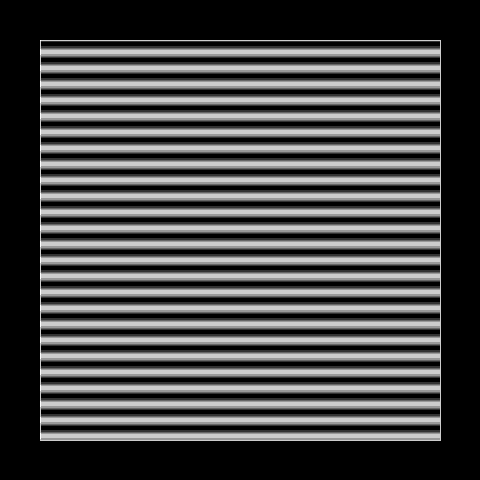
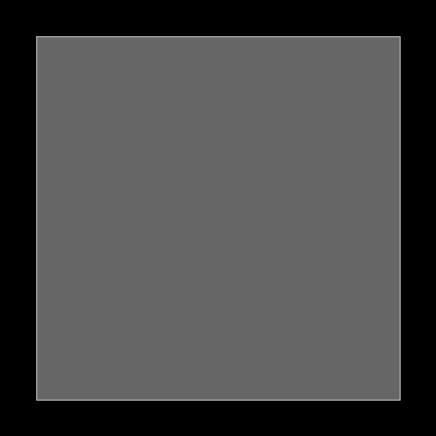
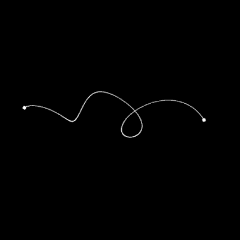
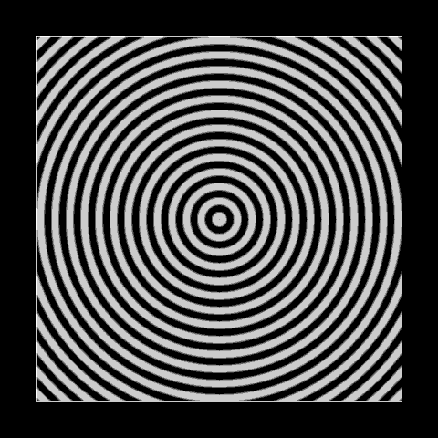
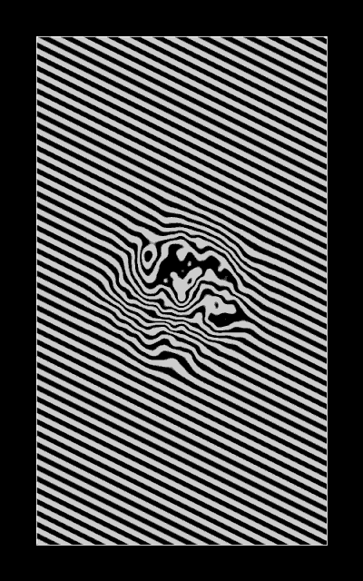

I want to make a quite simple tutorial that will help people to get started with the basic GIF making techniques and templates I use.
This tutorial is mainly aimed at people who have never made any perfectly looping GIF with Processing, but already know how to draw something with Processing. However there may be interesting stuff for people who are not beginners, so skip parts when it is too basic for you.
If you don’t already know how to draw things with Processing, check out The Coding Train channel on Youtube by Daniel Shiffman. If you already know how to program in one language, the Coding Challenges will be especially interesting to quickly learn how to use Processing to draw some cool stuff (that’s how I started). If not there are also videos that start from zero, you don’t need to have programmed before. I think it starts with this video (I have never watched those because I had already programmed a lot before).
How to make a basic perfectly looping GIF
This first part will show how to make a GIF of a white dot looping in a circle over a black background.
Here is the code, I will comment it later.
int numFrames = 50;
void setup(){
size(500,500);
}
void draw(){
background(0);
float t = 1.0*(frameCount-1)/numFrames;
stroke(255);
strokeWeight(10);
point(250+50*cos(TWO_PI*t),250+50*sin(TWO_PI*t));
if(frameCount<=numFrames){
saveFrame("fr###.png");
}
}
This code generates the frames of the GIF when you launch it, and you can see the animation at the same time.
The variable numFrames obviously contains the number of frames of the GIF.
The variable t represents time. The idea is that it goes from 0 (at the beginning of the animation), to 1 at the end. This is a convention that I took from the beginning and I observed that beesandbombs (who is a famous Processing gif maker) also uses it, so it is probably a good idea. “frameCount” is a Processing variable that starts at 1 the first time “draw” is called and that is incremented each time “draw” is called. Here t won’t reach 1 when frameCount will be equal to numFrames (last frame), but that’s to avoid the repetition with the first frame : we will draw the same thing with t=0 and t=1, and to have a smooth perfect loop, we need to save the t=0 or t=1 frame only one time. Here t will be greater than 1 after the frames are saved, if you ever want it to go back to 0 you can use “(1.0*(frameCount-1)/numFrames)%1” instead.
“point(250+50*cos(TWO_PI*t),250+50*sin(TWO_PI*t));” draws a point using the parametric equation of a circle of radius 50 pixels centered on the pixel of location (250,250). cos and sin are two pi periodic, so we have correctly the same position for t=0 and t=1 to have a perfect loop.
“saveFrame(“fr###.png”);” automatically saves a frame in the folder of the sketch, with a number equal to the frame count.
Now that you have your frames saved, there are lots of way to create your final GIF. For example you can use GIMP, Photoshop or Gifsicle (update : Gifsicle seems much much faster than GIMP). I use GIMP, it’s probably not the best way to do it but it works well for me. You just have to import the frames as layers, and then export as .gif. Then you have to say that you want your GIF to be an animation, and choose the delay between frames. I often choose 35 ms. Here is the result of the previous code with 20 ms delay between frames :

Motion blur with template from beesandbombs
You can already make nice things with the previous technique, but now I most often use the technique from the code template of beesandbombs (that he shares publicly). I talked with him about it, and he has no problem if I use it a lot, and now he even told me that I could make a tutorial about it. His code is about having two types of execution when you launch yur sketch. Either you change the time variable with your mouse, or you render your frames with motion blur. I think that motion blur can greatly increase the beauty of GIFs and that’s why I keep using it. His code also contains little functions and constants that can be useful.
What does motion blur mean algorithmically? It’s just an average on many drawings that are close in time.
Here is the code to render the previous white dot in beesandbombs style with motion blur :
int[][] result;
float t, c;
float ease(float p) {
return 3*p*p - 2*p*p*p;
}
float ease(float p, float g) {
if (p < 0.5)
return 0.5 * pow(2*p, g);
else
return 1 - 0.5 * pow(2*(1 - p), g);
}
float mn = .5*sqrt(3), ia = atan(sqrt(.5));
void push() {
pushMatrix();
pushStyle();
}
void pop() {
popStyle();
popMatrix();
}
void draw() {
if (!recording) {
t = mouseX*1.0/width;
c = mouseY*1.0/height;
if (mousePressed)
println(c);
draw_();
} else {
for (int i=0; i<width*height; i++)
for (int a=0; a<3; a++)
result[i][a] = 0;
c = 0;
for (int sa=0; sa 16 & 0xff;
result[i][1] += pixels[i] >> 8 & 0xff;
result[i][2] += pixels[i] & 0xff;
}
}
loadPixels();
for (int i=0; i<pixels.length; i++)
pixels[i] = 0xff << 24 |
int(result[i][0]*1.0/samplesPerFrame) << 16 |
int(result[i][1]*1.0/samplesPerFrame) << 8 |
int(result[i][2]*1.0/samplesPerFrame);
updatePixels();
saveFrame("fr###.png");
println(frameCount,"/",numFrames);
if (frameCount==numFrames)
exit();
}
}
//////////////////////////////////////////////////////////////////////////////
int samplesPerFrame = 5;
int numFrames = 50;
float shutterAngle = 1.5;
boolean recording = true;
void setup(){
size(500,500);
result = new int[width*height][3];
}
void draw_(){
background(0);
stroke(255);
strokeWeight(10);
point(250+50*cos(TWO_PI*t),250+50*sin(TWO_PI*t));
}
IMPORTANT UPDATE : wordpress can't display the code well, probably because of the weird symbols, here is a code that works : templateexample.pde
This can look scary but what it does is actually not complicated, I will explain it, but first let’s have a look at our new result :

Now let’s explain the code.
First of all you don’t need to understand the code above the “//////” to use it, just understand what it does.
The function “draw_” has to be used like you would normally use “draw”, and you have to draw something depending on t which is the time variable. t goes from 0 to 1 like previously and is set by the code above the “//////”.
boolean recording = true;
This variable is very important : if you set it to true, you will record the gif frames with motion blur. If you set it to false, you will control time with your mouse (0 on one side of the canvas, 1 on the other side), and there won’t be motion blur : it’s for testing your sketch without rendering the frames.
Now come the other important variables :
int samplesPerFrame = 5;
int numFrames = 50;
float shutterAngle = 1.5;
“numFrames” is the number of frames of the gif, like previously.
“samplesPerFrame” is the number of drawings that are used to produce a single final frame that will be an average of them for motion blur. Increasing it increases the quality of motion blur but costs more rendring time.
“shutterAngle” controls how spaced in time the samples of each frames are. If shutterAngle is equal to 1.0, the last sample of a frame will be just before the first sample of the next frame. If it is greater than 1.0, the samples of each frame will overlap in time with the samples of the neighboring frames. If it is smaller than 1.0 it will be more separated… If you want an explanation with code it is contained in this line (sa is the index of sample) :
t = map(frameCount-1 + sa*shutterAngle/samplesPerFrame, 0, numFrames, 0, 1);
I took shutterAngle equal to 1.5 to exagerrate motion blur, but usually beesandbombs and me use values smaller than 1.0.
The array “result” contains the sums of the samples and is used to compute the motion blur average.
Take care that when “draw_()” is called once again, the coordinate changes that you may have done with something like “translate” are not reset because it’s not the real “draw()”. You have to use “push()” and “pop()” around your coordinate changes.
I now want to prove my point that motion blur can change a lot the effect of a gif. Here is one I made, without and with motion blur. Notice how shades of grey appeared with motion blur.


I’ll come back to the important “ease” function from this template later in this tutorial : I want to talk about less technical stuff first.
Using an array of objects
The previous gif was very boring, right? Let’s try do to something more interesting from there without so much code, by using a technique that made me produce lots of gifs at the beginning : using an array of objects. So let’s have many dots moving at random positions with random parameters. It may look like quite a lot of new code but nothing really technical and everything is really worth understanding. This kind of code is well introduced by Daniel Shiffman’s videos.
//////////////////////////////////////////////////////////////////////////////
int samplesPerFrame = 5;
int numFrames = 50;
float shutterAngle = 1.5;
boolean recording = false;
int n = 3000;
class Thing{
float x = random(100, 400);
float y = random(100, 400);
float radius = random(2,15);
float size = random(1,2.5);
float offset = random(0, TWO_PI);
void show(){
stroke(255);
strokeWeight(size);
point(x + radius*cos(TWO_PI*t + offset), y + radius*sin(TWO_PI*t + offset));
}
}
Thing[] array = new Thing[n];
void setup(){
size(500, 500, P3D);
result = new int[width*height][3];
for(int i=0;i<n;i++){
array[i] = new Thing();
}
}
void draw_(){
background(0);
for(int i=0;i<n;i++){
array[i].show();
}
}
Result :
The offset attribute is there to avoid having all the dots at the same angle at the same time.
Now a trick is to use the “noise” function of Processing instead of “random” : it is a kind of continuous randomness and it gives more structure.
I just change those lines :
float offset = 9*noise(0.02*x, 0.02*y);
and that one to use a little of transparency (not very pedagogical, just felt liek doing this haha) :
stroke(255,200);
Result :

Daniel Shiffman has videos that are great to introduce you to this noise function (Perlin noise) if you don’t know it. I also have tutorials about it on this blog.
Now let’s talk about one last thing that can be nice with this kind of gif : using a constructor. It can lead to less randomness and more structure. Here is an example :
//////////////////////////////////////////////////////////////////////////////
int samplesPerFrame = 5;
int numFrames = 75;
float shutterAngle = 1.0;
boolean recording = true;
int n = 100;
class Thing{
float size = random(1,5);
float offset = random(0, 0.6);
float theta;
Thing(float theta_){
theta = theta_;
}
void show(){
stroke(255,200);
strokeWeight(size);
float radius = 150 + 80*sin(TWO_PI*t + offset);
float x = 250 + radius*cos(theta);
float y = 250 + radius*sin(theta);
point(x, y);
}
}
Thing[] array = new Thing[n];
void setup(){
size(500, 500, P3D);
result = new int[width*height][3];
for(int i=0;i<n;i++){
float theta = TWO_PI*i/n;
array[i] = new Thing(theta);
}
}
void draw_(){
background(0);
for(int i=0;i<n;i++){
array[i].show();
}
}
Result :
Notice how the dots are regularly spaced with their angle. Nothing outstanding, it was just to show the use of a constructor.
I just wanted to introduce you to this code structure, that is also some kind of template.
About the easing function in the template
There are two functions called “ease” in the template. I only use the second one but use it a lot. I’m going to explain it a little.
float ease(float p, float g) {
if (p < 0.5)
return 0.5 * pow(2*p, g);
else
return 1 - 0.5 * pow(2*(1 - p), g);
}
p is basically a parameter between 0 and 1 (like t), that will be distorted by the easing function "ease", with the intensity g. It's very useful to get smooth transitions. When I didn't know this precise function, I used something similar for the same purpose, and I'm going to share it because the formula is easier to understand :
float ease(float p) {
return (1-cos(PI*p))/2;
}
Here is a gif showing the curve of the easing function with the parameter g oscillating between 1 and 5. (abscissa and ordinate shown from 0 to 1).
You can notice that the derivative is 0 at p=0 and p=1 (excepted when g = 1.0), that’s why it is so useful to make smooth transitions.
(Code to generate this gif : here)
This function may be a little abstract but it’s just incredibly useful.
For example easing was very useful to make smooth transitions in that gif :

Let’s use “ease” in the previous circle gif code (g = 3.0):
//////////////////////////////////////////////////////////////////////////////
int samplesPerFrame = 5;
int numFrames = 50;
float shutterAngle = 1.5;
boolean recording = true;
void setup(){
size(500,500);
result = new int[width*height][3];
}
void draw_(){
background(0);
stroke(255);
strokeWeight(10);
float t2 = ease(t, 3.0);
point(250+50*cos(TWO_PI*t2),250+50*sin(TWO_PI*t2));
}
Result :
Patakk, who has made awesome Processing gifs made a nice post about this “ease” function on his tumblr :
Update : that ease function is useful for much more things than what I show here, I may add other examples later.
Now that we’re talking about a very useful function : map, lerp and constrain (explained in the Processing reference) are also often very useful.
GIF compression
Finally just in case you want to upload some gifs on tumblr, you may at some point have troubles fitting into the 3 MB file size limit.
Here are some tricks to reduce file size :
– Use https://ezgif.com/optimize
– Have less frames
– Have less differences between successive frames
– Have less colors
– Have a smaller resolution
I hope this will helpful and that you learnt something, thanks for reading. The usual code template I use is actually different from the one I present here because I usually use openSimplex noise (I present it in this tutorial).